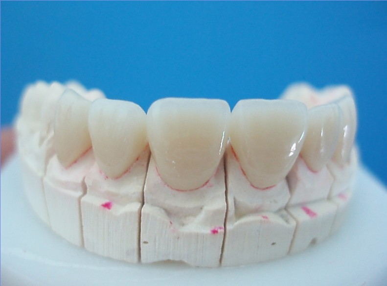

Teeth are windows of a healthy personality. Dental Crown is an artificial restoration cemented to cup the visible portion of a tooth. These crowns encase the portion of a tooth becoming its protective outer layer. This treatment in India is now easily accessible and may be opted for at affordable rates.
A dental crown is a tooth-shaped ‘cap’, placed over a tooth, covering it to restore its shape and size, strength, and/or to improve its appearance. The crowns enclose the visible portion of a tooth that lies at and above the gum line. They are bonded to the tooth using dental cement.
Dentists might recommend dental crown for a variety of reasons with most of these for following categories:

- To restore a tooth to its original shape
- To strengthen a tooth
- To improve the cosmetic appearance of a tooth
Cracked/ chipped or decayed teeth could benefit from these crowns. A dentist may determine whether dental crowns are needed to aid in other dental procedures such as a dental bridge or covering a dental implant post. Apart from physical characteristics, a good candidate for dental crowns should have complete knowledge of the procedure and recovery. The patient should be willing to go through the process that could take two or three visits depending on the damage involved and or other oral health issues. Many dentists suggest to correct other dental or oral health concerns prior to going for the dental crowns.